Ті самі шість предметів, що й минулого разу, у двох нових манерах. Вгорі великий розмір (128 px), нижче той самий набір у нинішньому слоті-наліпці (масштаб 0,75: м'ятний — пояс, зелений більший — рука) на теплому тлі кімнати.
Вирізана наліпка з білою облямівкою, як сам інтерфейс: темний чорнильний контур, плоскі тони без градієнтів і глянцю, приглушена палітра.
Великі, 128 px
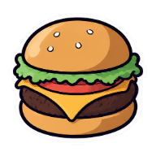
Бургер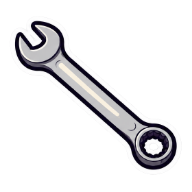
Гайковий ключ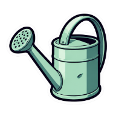
Лійка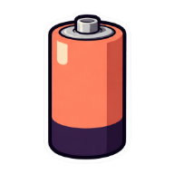
Батарея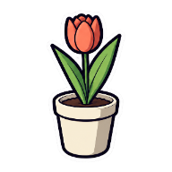
Квітка в горщику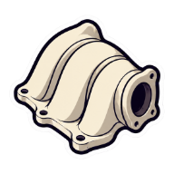
Друкована детальУ слоті-наліпці, 0,75
Чесна оцінка: тепер це одна мова з інтерфейсом (контур і облямівка як у бирок), але ще схоже на типову наліпку з генератора: на булці й батареї лишився м'який перелив, контур рівний, не «рукою». Деталь двигуна все ще схожа на земний колектор, а не на інопланетну річ.
Критик: біла облямівка, м'які переливи й «каталожні» предмети — це і є типова згенерована наліпка; наш інтерфейс — чорнильний контур і тверда тінь, без білого вирізу.
М'який матовий вініл, як шкіра прибульців, але з пропорціями справжніх речей: одне світло зліва згори, без ореолів і глянцю, кольори з шкіри й губ прибульців.
Великі, 128 px
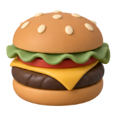
Бургер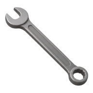
Гайковий ключ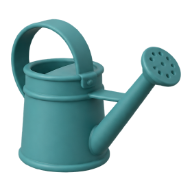
Лійка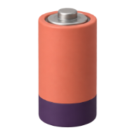
Батарея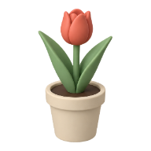
Квітка в горщику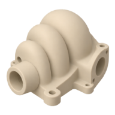
Друкована детальУ слоті-наліпці, 0,75
Чесна оцінка: набір цілісний і пасує до прибульців, деталь двигуна нарешті інопланетна (ребриста «мушля» на фланці). Але це близько до поширених 3D-наборів іконок: гладко, охайно, без характеру; бургер із великим кунжутом трохи іграшковий, а без контуру предмети на м'ятному слоті читаються слабше, ніж наліпки.
Критик: найгарніший, але найзагальніший: звичайний набір 3D-іконок без контуру, на м'ятному слоті тоне і не пасує до плоскої наліпки; варто взяти лише ребристу деталь двигуна як форму.